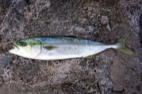

ぶりの漁獲量 都道府県ランキング
全39都道府県の順位と漁獲量
ぶりの漁獲量が全国で最も多いのは北海道で、1万6,176 tです。全国（8万1,404 t）の20%を占めます。

| 順位 | 都道府県 | 漁獲量 | 全国に占める割合 |
|---|---|---|---|
| 1位 | 北海道 | 1万6,176 t | 20% |
| 2位 | 長崎県 | 1万1,669 t | 14% |
| 3位 | 石川県 | 5,584 t | 6.9% |
| 4位 | 島根県 | 5,516 t | 6.8% |
| 5位 | 岩手県 | 4,898 t | 6.0% |
| 6位 | 福井県 | 3,376 t | 4.1% |
| 7位 | 三重県 | 3,086 t | 3.8% |
| 8位 | 千葉県 | 2,918 t | 3.6% |
| 9位 | 福岡県 | 2,670 t | 3.3% |
| 10位 | 青森県 | 2,430 t | 3.0% |
| 11位 | 宮城県 | 2,117 t | 2.6% |
| 12位 | 鳥取県 | 1,956 t | 2.4% |
| 13位 | 高知県 | 1,944 t | 2.4% |
| 14位 | 愛媛県 | 1,898 t | 2.3% |
| 15位 | 富山県 | 1,768 t | 2.2% |
| 16位 | 京都府 | 1,564 t | 1.9% |
| 17位 | 山口県 | 1,532 t | 1.9% |
| 18位 | 新潟県 | 1,374 t | 1.7% |
| 19位 | 宮崎県 | 1,271 t | 1.6% |
| 20位 | 鹿児島県 | 1,076 t | 1.3% |
| 21位 | 大分県 | 1,043 t | 1.3% |
| 22位 | 和歌山県 | 955 t | 1.2% |
| 23位 | 神奈川県 | 877 t | 1.1% |
| 24位 | 静岡県 | 770 t | 0.9% |
| 25位 | 徳島県 | 612 t | 0.8% |
| 26位 | 熊本県 | 489 t | 0.6% |
| 27位 | 茨城県 | 486 t | 0.6% |
| 28位 | 秋田県 | 358 t | 0.4% |
| 29位 | 兵庫県 | 326 t | 0.4% |
| 30位 | 山形県 | 138 t | 0.2% |
| 31位 | 佐賀県 | 137 t | 0.2% |
| 32位 | 広島県 | 106 t | 0.1% |
| 33位 | 香川県 | 93 t | 0.1% |
| 34位 | 愛知県 | 43 t | 0.1% |
| 35位 | 大阪府 | 40 t | 0.0% |
| 36位 | 福島県 | 39 t | 0.0% |
| 37位 | 東京都 | 28 t | 0.0% |
| 38位 | 岡山県 | 20 t | 0.0% |
| 39位 | 沖縄県 | 20 t | 0.0% |
ぶりの漁獲量の推移（令和2年〜令和6年）
全国の漁獲量は、令和2年の10万6,315 tから令和6年の8万1,404 tへ、23%減りました。1位は入れ替わっています（令和2年は北海道、令和4年は長崎県、令和5年は北海道）。
| 年 | 全国 | 1位 | 2位 | 3位 |
|---|---|---|---|---|
| 令和6年 | 8万1,404 t | 北海道1万6,176 t | 長崎県1万1,669 t | 石川県5,584 t |
| 令和5年 | 8万7,184 t | 北海道1万3,659 t | 長崎県1万2,991 t | 石川県6,959 t |
| 令和4年 | 9万3,112 t | 長崎県1万775 t | 北海道9,574 t | 千葉県9,378 t |
| 令和3年 | 9万4,608 t | 北海道1万3,971 t | 千葉県1万1,604 t | 長崎県1万750 t |
| 令和2年 | 10万6,315 t | 北海道1万5,344 t | 長崎県1万2,397 t | 千葉県1万898 t |
この数字について
- 分類：鯵の仲間
- 全国の漁獲量：8万1,404 t
- この数字が表すもの：漁獲量（海面漁業の漁獲量。養殖は含みません）
- 調査：海面漁業生産統計調査（海面漁業） 令和6年
- 39県分を調査（調査していない県は順位に入りません）
ぶりの漁獲量について、よくある質問
- ぶりの漁獲量が日本一の都道府県はどこですか？
- 北海道です。海面漁業生産統計調査（海面漁業）（令和6年）で1万6,176 tでした。
- ぶりの漁獲量ランキング2位・3位はどこですか？
- 2位は長崎県（1万1,669 t）、3位は石川県（5,584 t）です。
- ぶりの漁獲量ランキング4位・5位はどこですか？
- 4位は島根県（5,516 t）、5位は岩手県（4,898 t）です。ぶりの全39県の順位は上の表のとおりです。
- ぶりの全国の漁獲量はどれくらいですか？
- 8万1,404 t（令和6年）です。